Chapter 6 Program
👉 Program the Vibe: a simple concept and a direct syntax to manage fixture selection and control all the parameters.
This chapter deals with using the editor by explaining the concept and syntax and the smart screen for fixture selection, manipulation and parameter control.
Chapter index:
- 6.1 Concept
- 6.2 Editor
- 6.3 Selection
- 6.4 Groups
- 6.5 Parameters
- 6.6 Smart Screen
- 6.7 Commands
- 6.8 Pixel Mapper
6.1 Concept
The Vibe is an advanced lighting control system designed to simplify programming in all styles of Entertainment lighting.
Maintain Selection
To avoid reselecting fixtures after a STORE command, Vibe maintains its selection on reset of the editor.
To clear the editor and the fixture selection [VIBE] (Shift) + [RESET] must be pressed.
Fixture Control
To simplify programming, Vibe uses an abstract layer that allows fixtures of different hardware types to be presented to the user in a universal way.
Fixtures are programmed on the Editor either by using the programming syntax with the HardKeys or the Smart Screen pickers and features.
The dedicated graphical “Smart Screen” presents global pickers for most parameters including:
Intensity picker for dimmer values and strobe effects
Position picker with P/T and XYZ Trackpad
HSV color picker (Hue, Saturation, Intensity)
Wheel picker for Gobo, Prism, Animation and Color wheels
Beam picker for Iris, Zoom, Focus and Frost effects
Blade picker for framing system
Real World Units
Where possible picker values are displayed in “Real World” units
XYZ P/T in degrees
Strobe in HZ
Color in HSV 0-360 degrees
Zoom in degrees
Virtual Parameters
To make it easier to work with fixtures using different color systems and XYZ tracking systems, Vibe creates virtual parameters that may not exist in the physical fixture.
Some examples are:
Virtual Intensity for controlling LED fixtures that do not have a dimmer parameter.
Virtual HSV as a common denominator for all color mixing systems of Multi-color fixtures, such as CMY, RGB, RGBA, RGBW, RGBACL, …
Virtual XYZ coordinates for calibration of fixtures that only have physical Pan/Tilt parameters.
Color spaces
Vibe works in two synchronized color spaces:
HSV: Color for all types of fixtures can be set using the Color picker or the HSV parameter wheels. HSV virtual parameters are stored in Cues and Libraries just like physical parameters. Automatically CMY or RGB values (or any color mixing parameter of the fixture) will be displayed, but not directly referenced in cues using virtual HSV.
Color Mix (RGB, CMY, others): If color values are set by using the real color mixing parameters, physical values are stored in the cue and HSV values will be displayed but not directly referenced.
Position spaces
Vibe works in two synchronized position spaces:
XYV: Position for all types of fixtures can be set using the XYZ Position picker or the XYZ parameter wheels. XYZ virtual parameters are stored in Cues and Libraries just like physical parameters. Automatically Pan and Tilt values will be displayed, but not directly referenced in cues using virtual XYZ.
Pan/Tilt: If position values are set by using the real focusing parameters, physical values are stored in the cue and XYZ values will be displayed but not directly referenced.
Virtual crossfading
By default the color and position crossfading is done by using the physical color parameters, but any Cue can be assigned to crossfade the virtual parameters instead.
6.2 Editor
All fixture selections and parameter modifications occur in the Editor (also called Programmer in other consoles).
The HardKeys panel, both virtual and physical, and the Smart Screen, are the most important components used to program the Editor.
The Live View shows all values from both the fixtures in the Editor and the output from Controllers (also called Playbacks or Executors on other consoles).
Color coding is used to distinguish between values coming from the controllers and values in the Editor.
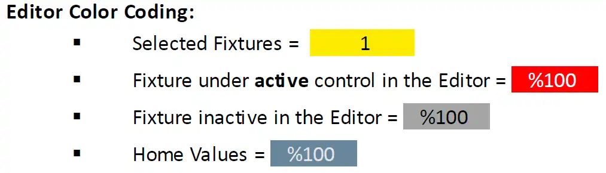
The Editor priority is always higher than the Playback priority, so any parameter moved in the Editor will overcome the values coming from any controller. Release the parameter or the fixture from the Editor to get back to the controller’s output values.
6.2.1 HardKeys
The Editor Hardkeys are the buttons on the Vibe Panel use to program.
Vibe is a touch-based system, allowing efficient fixture manipulation through its smart on-screen features, but it is also possible to program it in a traditional syntax based way by pressing the hardkeys in the proper sequence.
As all the other panel’s physical components (buttons and controllers), also the Hardkeys may be added to the layout by using the Virtual HardKeys View.
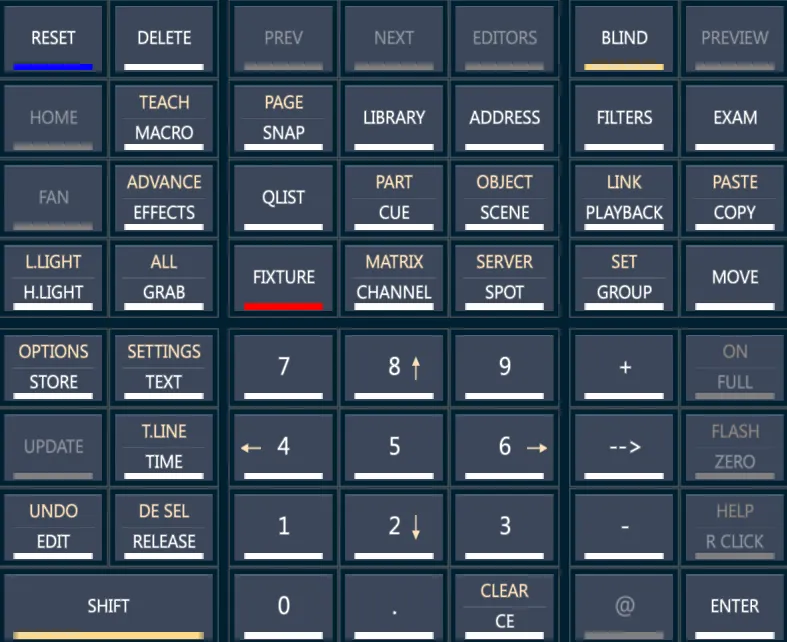
6.2.2 Tracking & Cue Only
Tracking Mode
Vibe by default is a tracking console and follows the conventions of modern show lighting.
Vibe also has a special track feature called SKIP: if cues are modified using SKIP, instead of Qonly, the relationship with the original hard value is maintained and changes to the original value skip over the modification and preserve the track.
Cue Only Mode
Modifications, insertions and deletions will be done Qonly by default.
Move fades will still be valid.
Non-Tracking or Compulite Mode
Vibe can also program without tracking, by applying the Compulite Mode.
Using Compulite Mode the defaults are changed to:
Tracking turned off.
Editor is not cleared after a Store.
After Reset, Editor values mantain their last position instead of returning to home values.
Controllers do not advance to the Cue after a Store.
6.2.3 Blind Editor
The Blind Editor is a parallel Editor used to create or modify objects without outputting values to the stage.
When using Blind Editor the [Blind] key flashes yellow and the Command Line turns yellow.
In Blind Editor the syntax and operations on the Objects, such as Store and Update, can be done exactly like in the Live Editor, but with no output on stage.
If a change is stored on content that is currently in Playback, then the output will be affected.
Vibe has two Blind Editor behaviors:
Blind acts as an independent editor, separate from the live editor.
Blind grabs the values from the live editor and viceversa. This is used to emulate the behavior of single editor consoles, where the main editor output is disabled while using the Blind Editor.
To open the Blind editor:
Press [BLIND] to open the Blind Editor empty, or as leaved at the last access.
Press [VIBE] + [BLIND] to open the Blind Editor in single editor mode. The Live Editor contents are copied to the Blind Editor.
To close the Blind editor:
Press [BLIND] to close the Blind Editor and get back to the Live Editor. The contents in the Blind Editor are kept.
Press [VIBE] + [BLIND] to exit the Blind Editor in single editor mode. The Blind Editor contents are copied and merged to the Live Editor. The contents in the Blind Editor are also kept.
6.2.4 Syntax
Vibe uses a hybrid command syntax, called action syntax, that does not need an “enter” command to complete the sequences
For keypad command line driven operations the command completes the sequence, the logic is:
- Source Object, Filter, Options, Command (Action Completes)
[Group 1] [Full] [Library 2 (Position) 1] [Cue 1] [Store Options] {Red + White} [Store]
For softkeys and controllers driven operations touching the object completes the sequence, the logic is:
- Source Object, Filter, Command, Options, Destination (Object Completes)
{GROUP} [1] [Full] [LIBRARY] {Position} [3] [Store] [Store Options] {Red Only} press any button on [Controller 1]
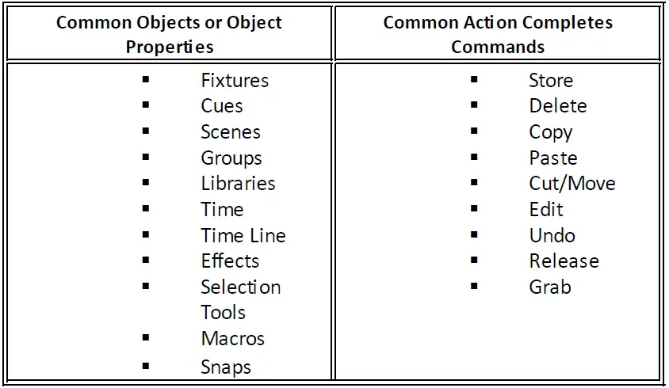
The Command Line is the area where commands appear as they are entered.
It is located on the Toolbar on the side of the [VIBE] menu.
When in BLIND Mode the command line is bounded in yellow.
The Selection Line is the area where the active fixture selection appears.
It is located on the Smart Screen.
It shows the current fixture selection in the selection order.
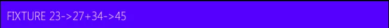
6.3 Selection
In this guide FIXTURE will be the default SET, but any SET (Channel, Spot, Matrix, Server, User Sets) could also be applicable.
Default SET is changed by double pressing the appropriate SET key
Dimmer is implied, but parameter would normally be specified after [+ ⟶ -] and before value.
[CE] will backspace the command line one character at a time.
[Shift CE] will clear the command line to the beginning and put the system in an idle state.
Fixtures are selected using the [FIXTURE] key on the keypad.
Fixtures on different Sets may be selected using the syntax [SET] [#] [FIXTURE] [#].
Fixtures may be stored in Groups and recalled using the [GROUP] key.
Fixtures may also be interactively selected via the Live, the Live Parameter and the Topo views.
[+] [-] keys are valid with Fixture selections and Groups.
[FIXTURE] . (dot) reselects the last selection.
[FIXTURE] reselects all fixtures in the Editor.
[CE] backspaces the command line one character at a time, but currently will not go back one command at a time.
[VIBE] + [CE/CLEAR] clears the command line.
[RELEASE] removes the parameters from the Editor.
First press releases the active parameters (last adjusted) for selected fixtures.
Second press releases all remaining parameters for selected fixtures.
[DESEL] deselects all fixtures but maintains the values in the Editor.
This function is usually used to protect the operator from accidentally adjusting parameters in the Editor when they are temporarily captured. It may also be used to “idle” the command line to allow [TEXT] {SK} function while fixtures are still in the Editor.
[RESET] releases all parameters from the Editor.
[VIBE] + [RESET] releases all parameters from the Editor and deselects all the fixtures.
[NEXT] / [PREV] increments or decrements fixtures in a selection. When used with a Group, will be confined to the fixtures in the Group.
[VIBE] + [NEXT] / [PREV] increments or decrements fixtures in a selection, keeping the fixtures’ amount and distance.
Command logic and shortcuts
[Fixture] # [+ ⟶ -] [Full] / [Zero] (@100 and @00).
[Fixture] # [+ ⟶ -] [@] enter value. Two digits are required to complete value entry.
[Fixture] # [+ ⟶ -] [@] [@] will set values to Full.
[Fixture] # [+ ⟶ -] [@] single value, [ENTER]. > [Fixture] [1⟶ 6] [@] [5] [ENTER] will set a value of 50%. > [Fixture] [1⟶ 6] [@] [7] [ENTER] will set a value of 70%.
Pressing [ENTER] at the end of value input is optional and does not affect the sequence. In most cases, it will simply terminate the command line.
[Fixture] # will jump the live display screen to the specified fixture if the fixture is not visible on the screen. (Fixture Jumping must be enabled in the Live Display, {Tools} (Wrench icon) popup under the Behavior Tab
[Fixture] # [+ ⟶ -] [@] [+] [value] or [@] [-] [value] will make a relative change to the stage value. > {If the stage value is 50, @ + 10 will set the value to 60, @ - 30 would set the value to 20}.
The rules for single digit plus Enter will also apply.
[Fixture] # [⟶ ] #, Parameter, [@] {value] [⟶] [value] will fan the range. (if no parameter is specified, dimmer/intensity will be fanned) 0, and 100% are also valid as well as [Zero] and [Full].
[Fixture] # [⟶ ] # Parameter, [@] [value] [⟶] [⟶] [value] will mirror fan the range. {1➡⟶ 100 would produce 0, 10, 20, 30, 40, 50, 40, 30, 20, 10, 0}
Fixture Dot = Restore last. (There’s a toolbar equivalent)
Fixture ⟶ = Reselect Editor. (There’s a toolbar equivalent)
Fixtures and Parameters may be deselected using [RELEASE / DESEL] Key. This leaves values in the editor but not under the control of the wheels.
[GROUP] # selects all fixtures that are recorded into the group. *The typed fixture order is preserved in a recorded group.
With groups, parameters may be fanned via syntax as above, but their recorded order will be considered.
Control without having to press Shift, Reset, which clears the values in the Editor.
{LIBRARY} {LIBRARY}, will select and enter values from a library into the Editor. This is especially useful when using position libraries as groups with positions.
6.3.1 Selection Tools
Selection button allows to split the fixtures’ selection.
Press [SELECTION] on Prog and Play pages’ toolbar to access the features.
Press [RESTORE] to get back to the original selection.
Press [LOCK] to make the current selection as the new base selection.
Press [CE/CLEAR] to return to the upper toolbar’s menu.
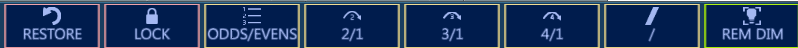
Selection toolbar has the following Selection Tools.
{ODDS} - Absolute odd number in the range
{EVENS} - Absolute even numbers in the range
{2/1} - Grouping of 2 starting at the first fixture of the range (relative odd numbers)
{2/2} - Grouping of 2 starting at the second fixture of the range (relative even numbers)
{3/1} - Grouping of 3 starting at the first fixture of the range
{4/1} - Grouping of 4 starting at the first fixture of the range
{ / } - Grouping of #/# starting at the # fixture of the range
[Fixture] [1] [⟶] [14] {Selection Tools} [3] {/} [1] - would select fixtures 1,4,7,10,13 as soon as the {/} is pressed EVERY 3/1 will be displayed on the selection line.
[Fixture] [1] [⟶] [14] {Section Tools} [3] {/} [2] - would select fixtures 2,5,8,11,14 as soon as the {/} is pressed EVERY 3/2 will be displayed on the selection line.
6.3.2 Order Tools
Order button allows to make changes to the fixtures’ selection order.
Press [ORDER] on Program and Playback pages’ toolbar to access the features.
Press [RESTORE] to get back to the original selection.
Press [CE/CLEAR] to return to the upper toolbar’s menu.
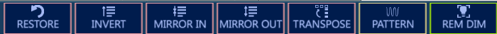
Order toolbar has the following Ordering Tools.
{INVERT} - Inverts the selection order linearly
{MIRROR IN} - Mirrors the selection order from the extremes to the center
{MIRROR OUT} - Mirrors the selection order from the center to the extremes
{TRANSPOSE} - Transposes the raws and columns of the selection order (useful for matrixes)
{PATTERN} - Opens the Pattern popup with more advanced reordering tools
Transpose
Transpose feature is used to reorder fixture selection based on a specified offset. This is particularly useful for creating interesting effects and fanning.
Fixture 1 ⟶ 12 {Transpose} 2 [ENTER] = 1+3+5+7+9+11+2+4+6+8+10+12
Fixture 1 ⟶ 12 {Transpose} 3 [ENTER] = 1+4+7+10+2+5+8+11+3+6+9+12
Fixture 1 ⟶ 12 {Transpose} 4 [ENTER] = 1+5+9+2+6+10+3+7+11+4+8+12
Pattern
Pattern feature is used to edit the selection order by using smart functions on a graphical interface. The Pattern popup also includes all the other Order Tools. It can be used prior to entering the Advanced Effects editor to create more complex block patterns that are available using the basic {Block Of} and {Sub-Block Of} key in the effects editor.
Make a fixture selection
Tap {Pattern} on the Editor Toolbar - The Pattern popup will open.
👉 This is not an effect even though it is a dynamic display.
Tap the indicator at the top of the displayed fixtures. - it turns white.
Select a number under the Block Size header.
Tap the {Spread} icon. - the columns will expand to show the new fixture order.
If desired make further order changes under the Offset Header and tap {offset} icon.
Make further modifications or reset the selection with the {Reset} {Invert} {Transpose} and {Invert Columns} keys.
Once finished, exit the popup by pressing Apply or [ENTER].
Open the Advanced Effects editor and program the desired effect.
👉 Simple Block and Sub Block groupings may be created in both Effects Editors with no need of using order tools, but the pattern feature allows more advanced blocks and groupings.
6.4 Groups
Groups are objects used to speed up the fixture selections, stored into the Groups Library.
A Group allows to recall all the fixtures included in it by tapping on the softkey or pressing [GROUP] [#].
👉 The order that fixtures are selected is stored in the group..
Store Groups to SKs:
- [FIXTURE] [#] [+ ⟶ -] [STORE] tap desired {Group Softkey} - it does not matter if levels are set, they will be ignored.
Label SK Groups:
Directly after storing a group, start typing from the keyboard and a Text Entry popup will open.
At any time, pressing the [TEXT] key followed by tapping the SK will open the Text Entry popup.
Store Groups via keypad syntax:
[FIXTURE] [#] [+ ⟶ -] [#] [GROUP] [#] [STORE].
Pressing the [TEXT] key after any Group store will open the Text Entry popup.
Modify Groups using Group Settings popup:
Range text labeling may be done via this method.
Using keypad, press [GROUP] [#] [Settings] - the Group Settings pop-up will open.
Using SKs, tap the source {GROUP} SK and then press [Settings] key.
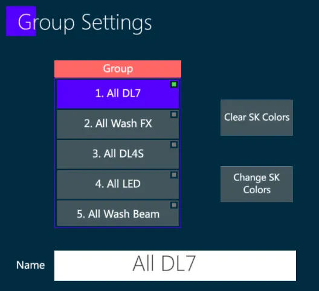
Store Groups from existent Groups:
A new Group may be created from existing Groups by selecting multiple Groups using Group SKs or via keypad.
Press [STORE] then tap destination {Group} SK or Press [Group] [#] [STORE] to create the new Group.
The new Group will not be linked nor referenced to the original Groups.
Groups may be used to release fixtures:
With keypad, [GROUP] [#] [RELEASE]
With SKs, {Group #} Release
Release a fixture from a Group Method 1:
With keypad, Fixture # [+ ⟶ -], [GROUP], #, [STORE], Group popup appears, select {Release}
With SKs, Fixture # [+ ⟶ -], STORE, {Group SK}, Group popup appears, select {Release}
Release a fixture from a Group Method 2:
[GROUP] [#] [EDIT], [UPDATE] key flashes red ([EDIT] tap {GROUP SK} is also valid)
[FIXTURE] [#] [RELEASE]
Press [UPDATE] to complete the sequence
To Delete a Group:
With keypad, [GROUP] # [DELETE]
With SKs, {GROUP} [#] [DELETE]
6.5 Parameters
Parameters are any feature of a device that may be manipulated and stored into an object.
Examples of parameters are:
Dimmer
Pan/Tilt
Cyan/Yellow/Magenta
Zoom/Focus
Gobo Wheel
Blade Rotation
To control properly any fixture, the Vibe device needs to be built according to the DMX chart of the fixture’s parameters, that is usually reported in the manufacturer’s user manual.
6.5.1 Param Banks
Vibe organizes the fixtures’ parameters under 6 standard Banks and 2 special Banks:
Standard Banks are:
Intensity
for params related to the power and rate of the light output
typical parameters are Dimmer, Shutter, Strobe
Position
for params related to the movement and focusing
typical parameters are Pan, Tilt, Move speed
Color
for params related to the light’s colors and tints
typical parameters are Red, Green, Blue, White, Cyan Magenta, Yellow, CTC
Beam
for params related to the angle and size of the light beam
typical parameters are Zoom, Focus, Iris, Prism
Image
for params related to the pictures that may be applied to the light beam
typical parameters are Gobo wheel, Gobo rotation, Animation wheel
Shape
for params related to the framing system that cuts the light output
typical parameters are Blade depth, Blade angle, Blade rotation
Special Banks are:
Control
a param that sends “real time” messages to fixtures control functions
typical functions are Lamp On, Lamp Off, Reset
it is a special bank because its parameters are not stored in cues, scenes and libraries
Media
a bank that collects specific features to control media servers
it is a special bank because its parameters are actually included in the standard banks
Banks may be selected by tapping on the Smart Screen or by using the syntax [SHIFT] + [#] where the # corresponds to the number of the bank.
If the bank is already selected, the syntax SHIFT + # will go to the next bank page of the Smart Screen.
Make a Fixture Selection
SHIFT (VIBE) + 2 takes the Smart Screen to the Position (2nd) Bank
SHIFT (VIBE) + 5 takes the Smart Screen to the Image (5th) Bank
SHIFT (VIBE) + 5 (again) moves the Image Bank to the second page
6.5.2 Virtual Params
Vibe automatically adds to the fixtures the relevant virtual parameters, that allow controlling the corresponding real parameters in a smart and effective way.
Virtual controls are also mapped to the 4 physical wheels.
Virtual parameters are the following:
Virtual Dimmer: assigned to fixtures that don’t have a specific dimmer parameter, usually RGB LEDs, it controls the light output intensity by adjusting the color values proportionally.
Virtual HSI: assigned to fixtures with any kind of color mixing system, it’s a set of 3 params (Hue, Saturation, Intensity) that controls the color output by adjusting the real color values.
👉 It comes particularly useful when a fixture needs to be switched with another having a completely different color mixing system, for example an CMY to an RGBA.
- Virtual XYZ: assigned to fixtures with Pan/Tilt parameters, it’s a set of 3 params (VX, VY, VZ) that controls the focusing by adjusting the position values. If based on a correct fixture calibration it allows to focus the fixtures on any stage point by simply tapping on the screen.
👉 It comes particularly useful when a fixture needs to be switched with another having a different Pan and Tilt range.
6.5.3 Fixture Manipulation
The manipulation of any fixture’s parameter values may be set by using either Vibe’s intuitive Smart Screen picker system or the conventional encoder wheels and the keypad method.
The switch between banks can be done either from the Smart Screen or through the combination SHIFT + # where the # represents the bank number.
Standard programming:
Programming may be done traditionally by using {Bank} keys and the 4 large push wheels.
Select the fixtures to program: Fixture # [+ ⟶ -]
Select the {BANK} of the parameter you wish to adjust.
Banks may contain more than 4 wheels of parameters. Tap the {BANK} key or push the encoder wheel again to page to the next set of 4 parameter wheels.
Select the Param to adjust either on the touch screen or by pushing the correspondent encoder wheel. The wheel display turns red.
Rotate the encoder wheel of the parameter you wish to adjust, or directly add values with the keypad:
- Push a parameter wheel to select the parameter
- AT will appear on the command line
- Type a value from Zero ⟶ Full.
@ is only used for the dimmer, parameters other than dimmer do not use the @ key.
A Parameter value must be entered in 2 digits or one digit and the [Enter] key for whole numbers: 05, 50, 5 [ENTER] = 50.
Interactive programming:
Programming may be done interactively by using {Bank} keys and the 4 large push wheels.
Select the fixtures to program: Fixture # [+ ⟶ -]
Select the {BANK} of the parameter you wish to adjust OR Drag the Wheel Picker on the right side of the Smart Screen and browse to the wheel and slot you want to program.
Tap the tab of the feature OR Tap the wheel slot that you wish to program. The context sensitive area on the Smart Screen will open with the appropriate picker.
Adjust the virtual controls through the options shown in the picker, that will be grayed out if not available in the current fixture selection.
Select multiple parameters:
- After making a fixture selection, toggle multiple parameters ON/OFF by tapping {Parameter Keys}, pressing encoder wheels, or toggling desired live display headers.
Manipulate all parameters in a bank:
After making a fixture selection, hold [SHIFT] and tap a {Parameter Bank Key}.
Pressing and holding a {Parameter Bank} will popup three options:
{HOME} - Sets the bank’s parameters to Home values.
{ALL PARAMS} - Selects all parameters in the parameter bank.
{RELEASE} - Releases the bank’s parameter from the Editor.
6.5.4 Editor Controls
Dimmer Wheel is always controlling the selected fixtures’ Dimmer params, independently from the currently selected bank and parameters.
Trackball is always controlling the selected fixtures’ Pan and Tilt params, independently from the currently selected bank and parameters.
[PREV] / [NEXT] keys have the same functions of the Next and Prev hardkeys, but are positioned near the trackball and the dimmer wheel to make the adjustment of these params fast and comfortable.
[X LOCK] / [Y LOCK] keys lock the X or Y axis of the trackball, allowing to move individually Pan or Tilt instead of both.
[RES] - Sets global encoder resolution.
Blue = Low 8 bit,
Green = Medium 10 bit (Default)
Red = Higher 12 bit.
Yellow = High 16 bit.
Magenta = Highest 24 bit.
👉 Holding the [VIBE] key down while turning an encoder temporarily sets the encoder to high resolution 16 bit.
- Encoder Wheels the 4 interactive encoder wheels control the 4 params currently shown on the Smart Screen’s wheels display and allow to select or deselect the parameters by pushing the wheels.
👉 Vibe uses a precision algorithm for encoders. Based on the starting resolution, the slower an encoder is turned, the more resolution it has.
Extra Wheels the 4 additional interactive encoder wheels on the Smart Screen’s right side control 4 additional params, that are dependent on the bank and selected fixture type.
Position, Image and Shape assign Focus and Zoom to the interactive wheels.
Color assigns Color Wheels and CTC to the interactive wheels.
Beam assigns Prism and Prism Rotate to the interactive wheels.
6.6 Smart Screen
The 11.6” multi-touch monitor directly above the 4 encoder wheels is referred to as the Smart Screen.
The Smart Screen is the “brain” of the Vibe, designed for an easy and intuitive lighting control experience.
Smart Screen is dedicated to displaying:
Context sensitive interactive bank, and parameter information.
Encoder wheel displays.
Playback information for the controllers that are directly above it.
Special popups for Libraries, Store options and Grab functions.
A simplified Effects editor.
Displays for Fan feature.
The Context sensitive area changes depending on the bank and fixture type.
Where possible, similar parameters from different fixture types will be presented to the user using Vibe’s universal fixture model.
It is not necessary to memorize the manufacturer’s specification of each fixture, as all fixtures are programmed in a similar consistent way.
Smart Screen is divided into sections corresponding to the Parameter Banks.
The Bank buttons on the Smart Screen, used to access the different parameters of the selected fixtures, have the following behavior:
Bank buttons 1-6 are always enabled. (i.e., to access libraries in the Context view)
If the Bank is enabled and active (there are parameters for the current selection in this bank), it has White text.
If the Bank is enabled and inactive (there are no parameters for the current selection in this bank), it has Black text.
If the Bank is disabled (not functional in the current selection), it is grayed out and not accessible.
If the Bank is currently selected, it has a colored background.
Parameters can be selected on the Smart screen by tapping on their box or by pressing the corresponding encoder wheel.
Currently selected params get a Red background
Editor activated params get a white background
Editor released params get no background (their value may be in idle state or come from an active controlled)
Synchronized params (virtual with physical and viceversa) get an orange text
Quick Actions
The Bank boxes and the Encoder param boxes on the bottom of the Smart screen, as well as the Extra wheels param boxes on the right side (when the “Smart” option is set) have some quick actions that can be activated with the long-click gesture.
Banks Quick Actions, referred to all the parameters of the bank, are:
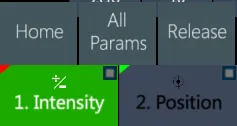
Home (assign home value)
All Params (selection in editor)
Release (release from editor)
Params Quick Actions, referred to the specific parameter on the encoder or extra wheel, are:
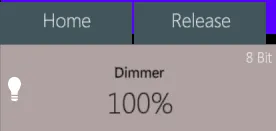
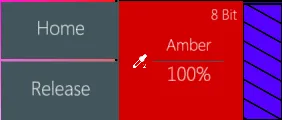
Home (assign home value)
Release (release from editor)
6.6.1 Intensity
Intensity bank has parameters like Dimmer, Shutter and Strobe.
The dimmer level can be set either with the editor keys and wheels, and through the smart screen by using the virtual sliders and the predefined incremental steps.
The strobe and shutter level, mode and frequency can be set in the smart screen with the macros showing the selected fixtures’ properties.
Smart Screen - Intensity Bank
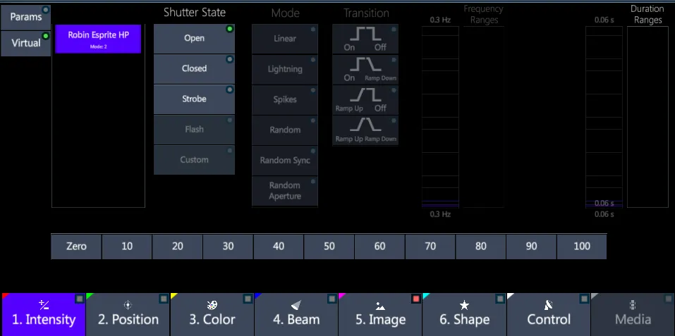
If the selected shutter / strobe parameter’s step has the possibility of a linear control of the rate, the virtual slider that controls the transition timing in Hz will be enabled.
6.6.2 Position
Position bank has parameters like Pan and Tilt.
The fixtures’ position can be set either with the editor keys, wheels, and trackball, and through the smart screen by using the virtual sliders and the position picker.
Smart Screen - Position Bank
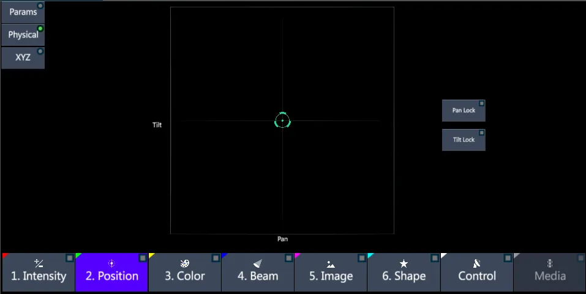
The position is calculated at the same time on Pan/Tilt values and on virtual XYZ values, based on the fixture’s calibration on the stage.
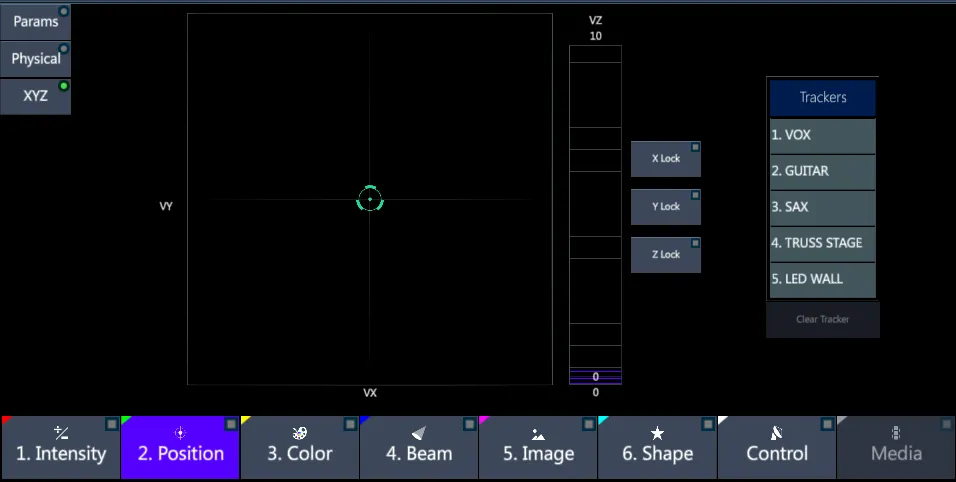
Independently from the fixture’s pan and tilt range, the virtual XYZ coordinates allow easy interchangeable operations between different kinds of fixtures.
In case of exchange with a fixture using a different pan and tilt range, the XYZ values will automatically recover the positions.
Position Lock functions allow to temporarily lock a movement direction to gain a more precise control of the unlocked ones.
This may be done on the panel by using the X-Lock, Y-Lock and Z-Lock buttons, which blink while enabled (when using the physical parameters, they will respectively lock Pan and Tilt).
This may also be done on the Smart Screen position pickers.
The Physical picker shows the Pan and Tilt Lock keys, while the Virtual picker shows the X,Y,Z Lock keys.
6.6.3 Color
Color bank has parameters like Color Mix (RGB, CMY, RGBW, …) and Color Wheels.
The color level can be set either with the editor keys and wheels, and through the smart screen by using the virtual sliders in “Params” screen, the color picker in “Virtual” screen, or the color presets.
Smart Screen - Color Bank
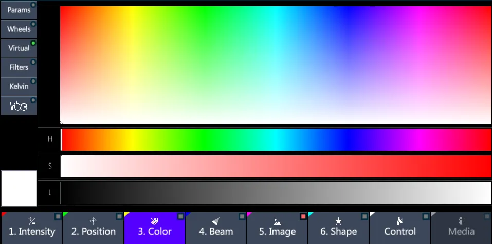
The color mix is calculated at the same time on the color values and on virtual HSI values, based on the fixture’s color mixing system.
Independently from the fixture’s color mixing system, the color picker based on HSI system allows easy interchangeable operations between different kinds of fixtures.
In case of exchange with a fixture using a different color mixing system, the virtual HSI values will automatically recover the fixture’s colors.
The color wheels are visualized in the interactive wheel picker on the right and can be selected with a touch. The selection opens the image picker to get complete control on the wheels’ features.
The color mix can also be set by using the predefined preset combinations and Vibe’s smart features.
Filters Picker
Color bank has a Lee and an Other filters section to assign colors based on the most used brands of gel filters.
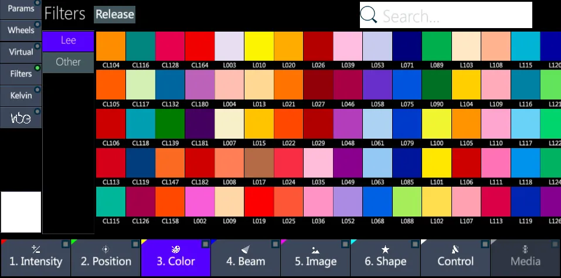
Use the search field to find a specific filter by its numeric code.
Kelvin Picker
Color bank has a Kelvin picker for a fast adjust of any color temperature between 1000K and 20000K, linearly or by incremental steps.
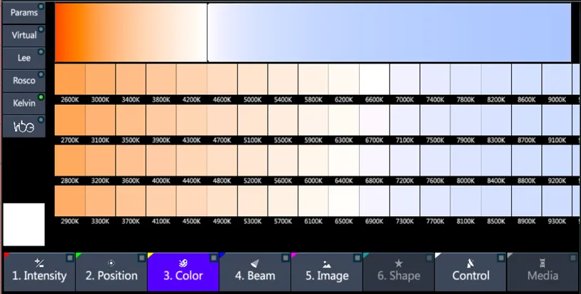
This feature is recommended for working in television studios and photography environments.
Vibe Mood Picker
Color bank has a Vibe mood picker for a fast reproduction of a color taken from a picture.
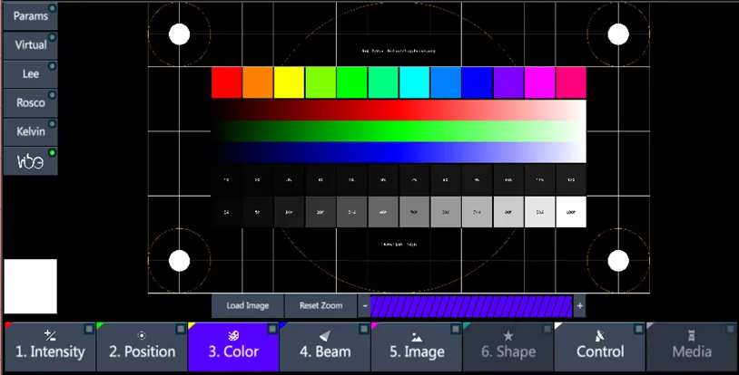
This feature is recommended if working with assigned color palettes, for example in cinema or theater shows, to create color libraries directly from the scene’s and costumes’ pictures.
To get a color from an image:
Load an image file to the Vibe mood picker
Zoom the section of the target color
Select the color to assign to the fixture selection
👉 The system provides an inbuilt database of 10 default images that may be used to check the Vibe Mood Picker and create Color Libraries based on the images’ tones.
6.6.4 Beam
Beam bank has parameters like Focus, Zoom, Frost and Prism.
The beam parameters can be set either with the editor keys and wheels, and through the smart screen by using the virtual sliders and the beam picker.
Smart Screen - Beam Bank
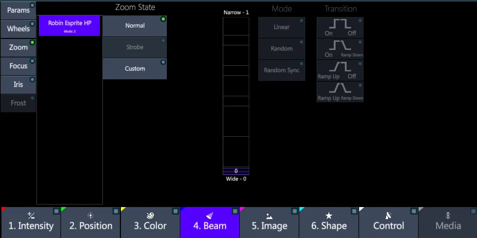
The beam picker automatically enables the features available on the selected fixtures, offering an intuitive control system to set the mode, speed and type of transition related to the controlled parameter.
The prisms are visualized in the interactive wheel picker on the right and can be selected with a touch. The selection opens the wheel picker to get complete control on the prism wheels’ features.
6.6.5 Image
Image bank has parameters like Gobo and Effect wheel.
The image parameters can be set either with the editor keys and wheels, and through the smart screen by using the virtual sliders and the image picker.
Smart Screen - Image Bank
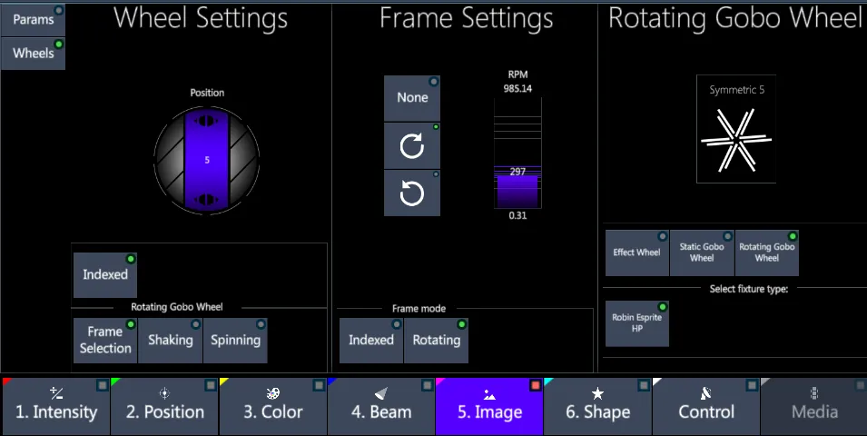
The gobo wheels are visualized in the interactive wheel picker on the right and can be selected with a touch. The selection opens the image picker to get complete control on the wheels’ features.
The image picker can be also accessed by pressing the Virtual button on image bank’s screen.
On the image picker’s right side, it is possible to visualize and select each fixture’s wheel, on the left side can be set the indexing and rotation speed of the whole wheel or the single frame.
The interactive wheel picker shows all the graphic frames related to the selected wheel to allow fast interchange operations.
6.6.6 Shape
Shape bank has parameters like Blade movement and rotation.
The blades’ depth and angle can be set either with the editor keys and wheels, and through the smart screen by using the virtual sliders and the blade picker.
Smart Screen - Shape Bank
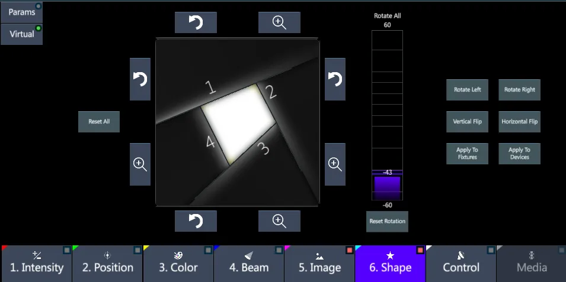
The blade picker features a smart graphic control of the blade, independently from the fixture’s blade system.
Each single blade can be moved, angled, and individually reset, the blade system can be rotated all together, and the reset options permit to reset the whole system or just the rotation parameter.
6.6.7 Wheel Picker
Wheel Picker is used to control any kind of wheel, such as Color, Prism, Gobo and Animation. The values will be stored into libraries, scenes and cues according to the parameter’s bank.
Smart Screen - Wheel Picker
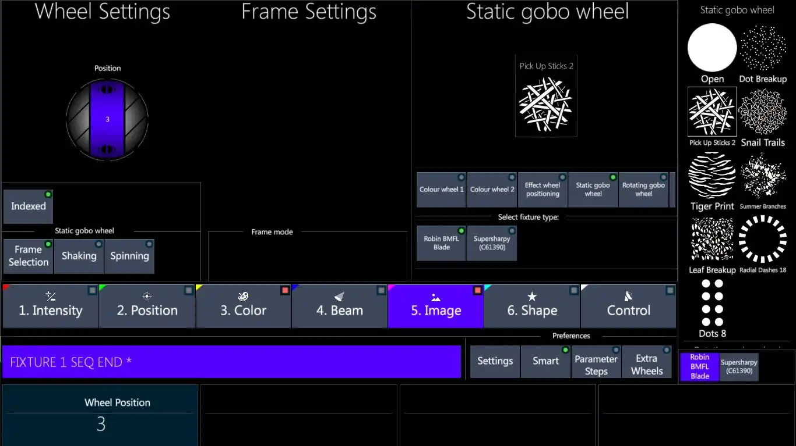
The wheels adjusted with the wheel picker will reflect into values assigned to the wheel’s parameters, usually the wheel’s positioning and rotation and the wheel’s frame selection, index and rotation.
Any wheel of the fixtures can be controlled through the wheel picker exactly in the same way, depending on the available possibilities, by using the Smart Screen’s “Smart” visualization mode to visualize and select the frames’ icons directly on the right side column.
6.6.8 Control
Control bank has parameters related to the fixture’s functions, like Lamp on/off and Reset.
Smart Screen - Control Bank
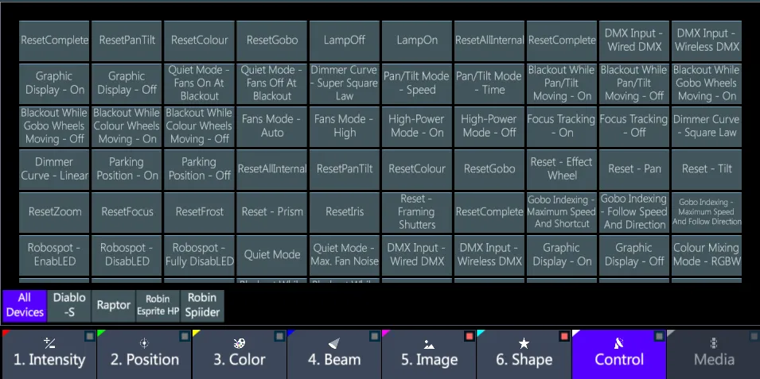
The control bank is a special bank as its parameters are not stored in cues. Instead it sends “real time” messages to fixtures control functions.
6.6.9 Media
Media Bank is the picker designed for an intuitive Media Server programming, to handle media contents in a smart and easy way.
In order to see the content in this bank, users will need to create Media Server fixtures such as Green Hippo’s Hippotizer or Arkaos.
All virtual controls are also mapped to the physical wheels for easy use.
The Media Bank has 5 types of pickers:
Media
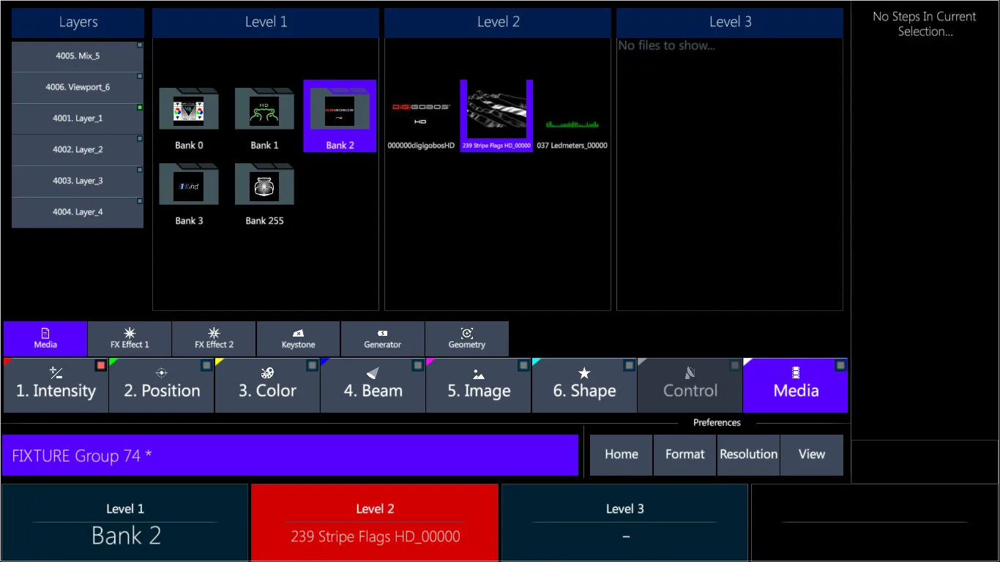
This picker includes a quick way to trigger media files from the media server. It shows all the folders and files inside the server and lets the user decide which one to play.
By default all the folders and subfolders are visible, and once synchronizing the data with the media server through CITP the file’s thumbnails will be shown.
FX (Effect)
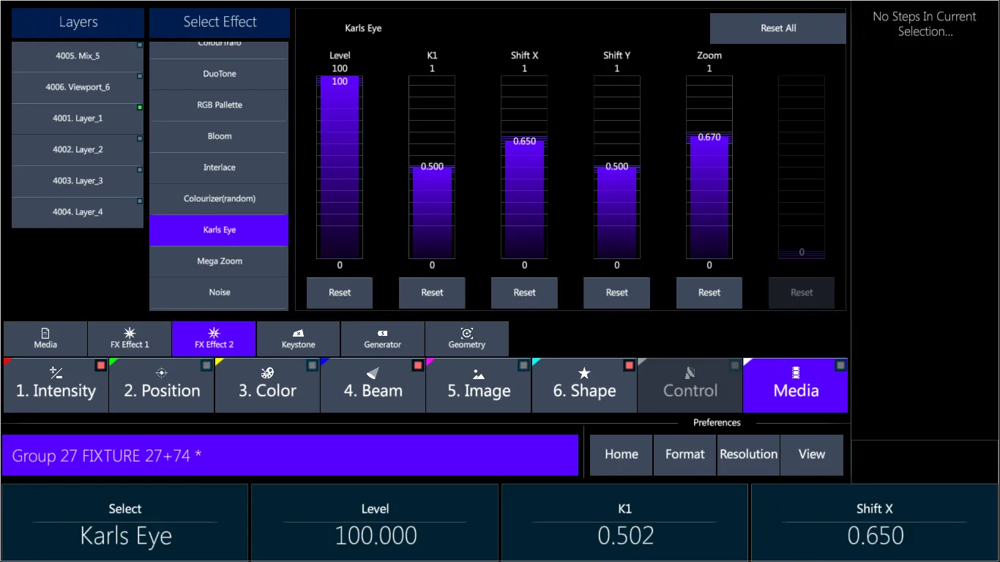
This picker includes the effects available on the media server.
There are media servers with more than 1 effect engine (layer) and for each effect there will be a numbered FX Bank button.
The FX Bank includes a list of effects that are possible to trigger on the server and a list of parameters to control the effect.
The parameters will be dynamically changed according to the selected effect.
Keystone
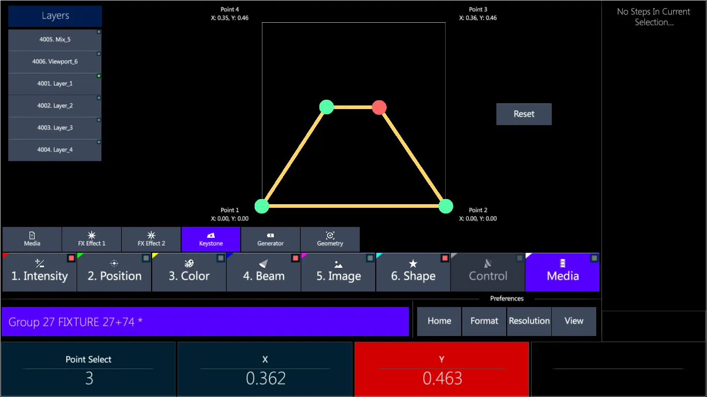
This picker includes a graphic interface to control the keystoning of the server.
There are 4 points available for movement in order to control the position of each corner of the keystone control.
The selected point that is assigned to the physical wheels is marked in red.
Generator
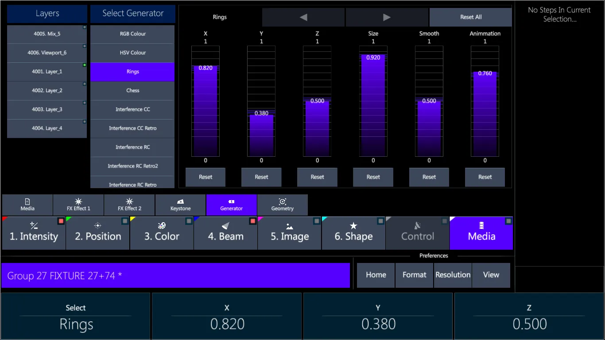
This picker is specifically made for Hippotizer. On this bank, users can control the picture that is sent from the server’s layer on the Generator engine.
The bank acts the same as the Media FX bank by selecting the Generator from the Generators list and then moving the Generator’s parameters accordingly.
Geometry
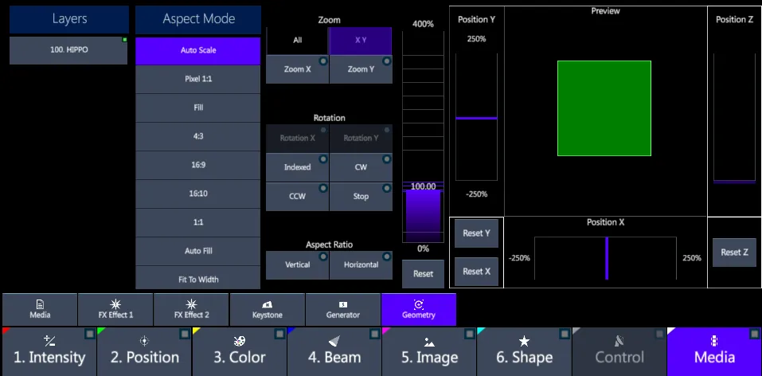
This picker includes an interface to control most of the geometric functions of the media server.
There are options to control:
Aspect Mode of the layer
Zoom
Rotation, Indexed or Rotating with speed control
Aspect Ratio
Positioning, both X and Y
In addition there is a graphic preview to show the approximate result of the geometric parameters.
6.6.10 Settings
The main Smart screen settings, shown on the first level, refer to the content visualized on the right side columns.
The right side columns may be set in the following modes:
Smart - show the wheel’s frames of the selected fixtures
Param Steps - show the stape of the active parameter
Extra Wheels - show the parameters assigned to the extra wheels
👉 While working on banks like Position, Image and Shape, it is very often needed to adjust the focus and zoom of the fixtures. Therefore it may be used the Extra Wheels option on the Smart screen to get these parameters directly available on the extra wheels, with no need to switch to the Beam bank to control them.
Smart Screen’s Settings are accessed by tapping the {Settings} key.
The options are divided in 3 menus:
Format
Resolution
View
The {Home} key returns menus to the upper level.
Format - Sets the view format for wheel displays.
Percent
Decimal
Text
Text + Percent
Source PB
Resolution - Sets the wheels’ and the virtual pickers’ control resolution.
👉 This may also be set by toggling the [Res] key over the trackball.
8 bit - Blue on [Res] Key
10 bit - Green on [Res] key
12 bit - Red on [Res] key
16 bit - Yellow on [Res] key
24 bit - Magenta on [Res] key
View - Sets the behavior of the smart screen views, divided in Display Mode and Echoline Mode.
Display Mode
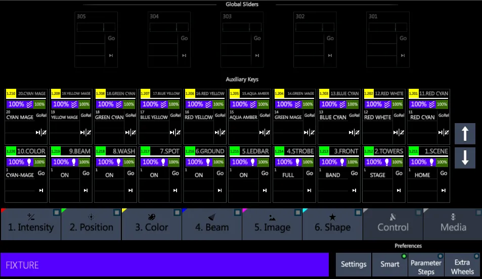
- Auto - Shows programming display when there are fixtures in the editor, and shows the controller displays for Aux Qkeys and Global Sliders when the editor is cleared.
- Programming - Maintains the programming display even with the editor released.
- Playbacks - Maintains the playback controller display even with fixtures in the editor.Echoline Mode
- Fixture Selection - The line shows the current editor's fixture selection.
- Syntax - The line shows the current syntax, like the main screen's toolbar.Smart Screen’s Preferences are accessed by tapping the {Smart} {Param Steps} and {Extra Wheels} keys near the {Settings} key.
The preferences affect the visualization display in the right side column of the smart screen:
Smart - All wheels for the selected fixture are shown in the interactive wheel picker area.
Parameter Steps - Pressing a parameter wheel or tapping the wheel display above it will display a picker list of all feature steps for the selected fixture.
Extra Wheels - Displays wheel information for the additional context sensitive encoder wheels.
6.7 Commands
6.7.1 Clear
To clear the last command or key pressed from the Command Line
- Press [CE] key
To clear the Command Line without releasing the fixture selection and the param values assigned on the editor
- Press [VIBE] + [CLEAR] keys
6.7.2 De-Select
To de-select the current Fixture Selection without releasing the param values assigned on the editor
- Press [FIXTURE] or [FIXTURE] [#] [+ ⟶ -] [#] [VIBE] + [DESEL] keys
To re-select the last Fixture Selection
- Press [.] key
6.7.3 Release
To release all the selected fixtures’ parameters from the Editor
- Press [FIXTURE] or [FIXTURE] [#] [+ ⟶ -] [#] [RELEASE]
To release the entire bank of parameters of the selected fixtures from the Editor
- Press [FIXTURE] or [FIXTURE] [#] [+ ⟶ -] [#] [VIBE] + {Bank} (or tap on the Bank) [RELEASE]
To release a fixture parameter (or the active parameters) of the selected fixtures from the Editor
- Press [FIXTURE] or [FIXTURE] [#] [+ ⟶ -] [#] {BANK} {PARAMETER} [RELEASE]
If a fixture is selected and active (Red), the first press of [RELEASE] releases the parameter and then the second press releases the whole fixture.
6.7.4 Reset
To reset the Editor, releasing all the param values without releasing the fixture selection
- Press [RESET] key
To reset the Editor, releasing both the fixture selection and the param values
- Press [VIBE] + [RESET] keys
6.7.5 Home
When a parameter is not in use, meaning it is not in the Editor, neither triggered from any Playback, the values used by Vibe to tell where the fixture parameters should be set can be based on the fixture’s home values or on the last value assigned.
Vibe has two options to set uncontrolled parameters’ values, that can be set in the System Settings popup in the {Editing Properties} tab under the Default Stage Values header:
{Use Home values} sets the uncontrolled parameters to their Home Value
{Maintain Last Value} leaves the uncontrolled parameters to Maintain the Last Value they were at before being released
All the devices have default home values for parameters based on the manufacturer’s DMX chart.
Selected fixtures or parameters may be sent to their defaults using the [HOME] key.
Home - Sets parameter values to home values as defined by the manufacturer or to custom values defined by the user Home Scene.
The [HOME] button brings the fixture, bank or parameter home value in the Editor.
To Home selected fixtures in the Editor
- Press [FIXTURE] or [FIXTURE] [#] [+ ⟶ -] [#] [HOME]
To Home the entire bank of parameters of the selected fixtures in the Editor
- Press [FIXTURE] or [FIXTURE] [#] [+ ⟶ -] [#] [VIBE] + {BANK} (or tap on the Bank) [HOME]
To Home a fixture parameter (or the active parameters) of the selected fixtures in the Editor
- Press [FIXTURE] or [FIXTURE] [#] [+ ⟶ -] [#] {BANK} {PARAMETER} [HOME]
If a fixture is selected and active (Red), the first press of [HOME] homes the parameter and then the second press homes the whole fixture.
6.7.6 Highlight
Highlight is used to help identify the positions of fixtures, so they may be edited more easily.
Highlight Mode affects parameters and banks in the following way:
Dimmer - Full
Other Intensity parameters - home values and masked
Position - unchanged and editable
Color - home values and masked
Beam - home values and masked
Image - home values and masked
Shape - home values and masked
To Highlight Fixtures or Groups:
Select fixtures using keypad or using Groups.
Press [H.LIGHT] - The key will flash in red to indicate the mode is active.
All the Fixture selection will be set as specified above.
Press [NEXT] - The first fixture will remain “highlighted” and all other fixtures will return to their editor or stage values.
Adjust Pan/Tilt as required and press [NEXT] to move to the next fixture.
Continue through the fixture selection using [NEXT] [PREV] until all fixtures are focused.
Press [H.LIGHT] again to turn off Highlight Mode. The red light will go out and fixtures will return to their current editor or stage values.
Highlight may be entered before a selection is made. Press [ENTER] to Highlight the selection.
To swap new fixtures into Highlight:
- Select new fixtures or Groups and press [ENTER] while still in Highlight Mode - the Highlight selection will be swapped.
Until [NEXT] [PREV] is pressed Groups will be appended to make up a larger Highlight selection.
Highlight may be customized when the default home values are too generic.
👉 Frequently users tighten the zoom or use a closer iris value as default to better focus the center of the beam.
6.7.7 Lowlight
Lowlight is used when many fixtures are lit up and therefore Highlight is not helpful.
Lowlight Mode affects parameters and banks in the following way:
Dimmer - 30% all fixtures except active fixture which will be at 100%
Other Intensity parameters - home values and masked.
Position - unchanged and editable
Color - home values and masked
Beam - home values and masked
Image - home values and masked
Shape - home values and masked Unlike Highlight, Lowlight maintains a value of 30% for dimmers while active.
To Lowlight Fixtures or Groups:
Select fixtures using the keypad or using Groups.
Press [L.LIGHT] - The key will flash in red to indicate the mode is active.
Press [NEXT] - The first fixture will go to a dimmer value of 100% and all other fixtures dimmer values will remain at 30%. Other parameters will return to their editor or stage values.
Adjust Pan/Tilt as required and press [NEXT] to move to the next fixture.
Continue through the fixture selection using [NEXT] [PREV] until all fixtures are focused.
Press [L.LIGHT] again to turn off Lowlight Mode. The red light will go out and fixtures will return to their current editor or stage values.
Lowlight may be entered before a selection is made.
Press [ENTER] to Lowlight the selection.
To swap new fixtures into Lowlight:
- Select new fixtures or Groups and press [ENTER] while still in Lowlight Mode - the Lowlight selection will be swapped.
Until [NEXT] [PREV] is pressed Groups will be appended to make up a larger Lowlight selection.
Lowlight may be customized when the default home values are are too generic.
👉 Frequently users set the Lowlight dimmer to Zero instead of the default 30% to create a solo effect.
6.7.8 Rem Dim
Remainder Dim is an Editor Tool commonly used in theater environments but can be useful in many other situations.
{REM DIM} Toggles all dimmer values to 0 except those that are selected.
If no value is given in the editor, the selected fixtures will maintain their current values.
Find {REM DIM} key on the toolbar when there’s a Fixture Selection active.
While in {REM DIM} is ON, [Next] / [Prev] will swap the Rem Dim fixture forwards or backwards.
If a selection of multiple fixtures is made followed by {REM DIM} all unselected fixtures will go to 0%. The selected fixtures will not be changed or entered into the editor.
If a selection of multiple fixtures is made, [Next] / [Prev] will force all but the first fixture in the selection to 0. The next press of [Next] / [Prev] will force the first fixture to 0 and release the next fixture’s dimmer. Fixtures in the selection will continue to swap from 0 to release with each press of [Next] / [Prev].
Pressing REM DIM again toggles the feature off and restores the stage look.
Cues may be stored with {REM DIM} ON and the dimmers forced to 0% by Rem Dim will not be stored.
Once stored, {REM DIM} is turned off.
6.7.9 Undo
Undo button directly rolls back the last actions.
Every parameter programmed in the editor can come back to its previous status by pressing the UNDO button.
Pressing Undo button multiple times will restore step by step the last actions.
Undo function can be used to recover the editor status after a Shift + Reset command, and to restore objects that have been stored, deleted, or updated, such as groups, libraries, qlists, cues and scenes.
Undo button works also with Home and High/Lowlight actions.
Undo History
Settings ⟶ Undo opens the Undo/Redo list to review and restore the last actions.
Undo History
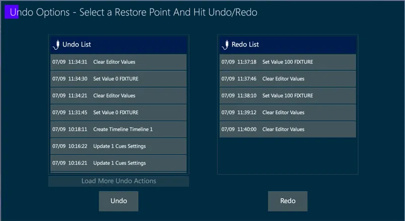
To Undo more operations at a time, access the Undo history with the sequence [Vibe] + [Settings], [Undo]
In the Undo popup’s left column are listed all the undoable actions, and in case an undo command has been done, the list on the right shows the redo able actions.
Each action reports the date and time when it has been done.
Select one or more actions, than press undo or redo to come back to the desired status.
The popup does not close until the apply or restore buttons are pressed.
6.7.10 Fan
Fan is used to apply a distribution of values to the Fixture Selection.
Fan of the selected fixtures’ parameters can be done either through the keypad syntax or by using the [Fan] key and Smart Screen’s interface.
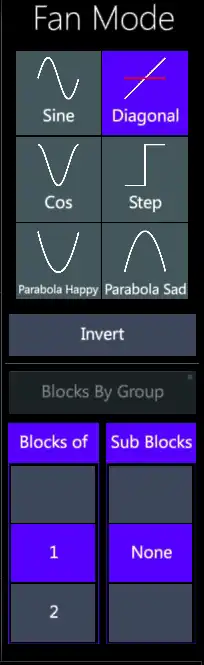
To enter the Fan Mode
Select the range of fixtures to be fanned.
Press [FAN] to enter Fan Mode. - The key will flash in red to indicate the mode is active.
Select a Curve from the Fan Mode picker on the Smart Screen’s right side.
Turn the encoder wheel of the parameter. - The param’s values will be set fanned proportionally to the curve applied the order of selection.
Toggle [FAN] OR Select a different parameter to turn Fan mode off.
Frequently used Fan curves:
{Fade In} / = lowest to highest
{Fade Out} = highest to lowest
{Diagonal} -/- = Standard PAN Fan
{Saw Tooth} / = Mirror lowest on ends to highest in middle
{Mirror} / = Highest on ends to lowest in middle
Curves can be freely changes while in Fan Mode to check the different results.
Any Curve created in the Curves Editor may be applied to Fan.
The Fixture Selection can be splitted to get fanned in Blocks of and Sub Blocks:
Select the range of fixtures to be fanned.
Press [FAN].
Select a Curve from the Fan Mode.
Select Blocks of {#}
Select Sub Blocks {#}
Turn the encoder wheel of the parameter requiring fanning.
Toggle [FAN] to turn off Fan Mode.
Examples of Blocks and Sub Blocks:
- {Fade In} - Blocks of 1 and no Sub Block
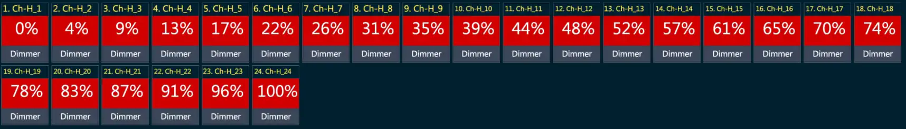
- {Fade In} - Blocks of 4 no Sub Blocks
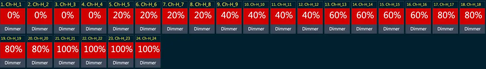
- {Fade In} - Blocks of 6, Sub Blocks of 2
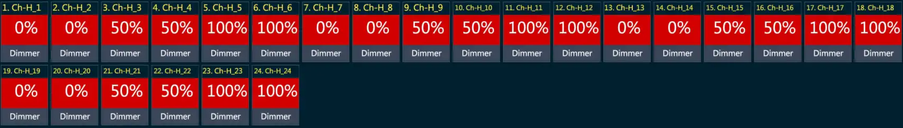
- {Saw Tooth} - (Low-High Mirror) Blocks of 12, Sub Blocks 2
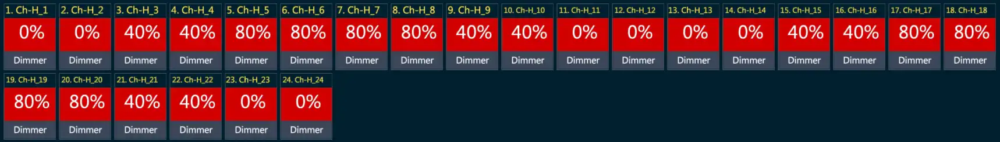
- Moving Light Fixture with {Fade In} Dimmer and Color Fan, and {Diagonal} Pan Fan
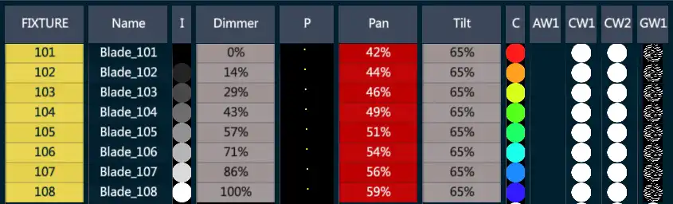
Fixture Groups may also be used as Blocks.
To Fan Blocks By Groups:
Select the Groups
Press [FAN].
Tap {Blocks By Group} under the Fan Mode picker.
Use any of the above methods to fan parameters by Group.
6.7.11 Copy / Paste
[COPY] and [PASTE] are used to make copies of any object, such as Groups, Libraries, Scenes, Cues and Qlists, and store them in the desired positions.
The syntax to copy and paste an object is:
{Object} [COPY] {Target} [PASTE]
👉 [COPY] and [PASTE] keyboard syntax can be also used to copy and paste the selected (Red) params of a fixture to another.
When something is in Copy the [COPY] key will flash in red to indicate there is a copied content.
When a Paste command applies the content to the target, the data is kept on the Copy key to allow making other copies.
Toggle [COPY] or [RESET] the Editor to remove the content from the copy feature.
Copy and Paste param values to Fixtures
{Fixture} {Param Selection} or {GRAB ALL} [COPY] {Fixture} [PASTE]
Copy and Paste a Bank of param values to Fixtures
{Fixture} {Bank Selection} [COPY] {Fixture} {Param Selection} [PASTE]
Copy and Paste param values to Groups
[Group] {Param Selection} or {GRAB ALL} [COPY] [Group] {Param Selection} [PASTE]
Copy and Paste param values from Cues
[Qlist] [#] [Cue] [#] [Fixture] [#] [COPY] [Fixture] [#] [PASTE]
Load param values from Cues to Editor
[Qlist] [#] [Cue] [#] [Fixture] [#] [LOAD]
6.7.12 Move
[MOVE] is used to change position of any object, such as Groups, Libraries, Scenes, Cues and Qlists.
The syntax to move an object is:
[MOVE] {Object} {Target}
[MOVE] can be also used to re-position Playback controllers without changing their content and settings.
The syntax to Move a controller is:
[MOVE] {Controller} {Target Controller}
6.7.13 Grab
Grab is a powerful tool for selecting fixtures that meet a number of conditions.
Pressing the GRAB key will directly apply the Default Grab Settings as defined in the Default Settings.
To set a different Grab behavior, press GRAB and then SETTINGS button.
The on-the-fly Grab Settings popup will open, where the grabbed selection may be changed and eventually set as new default behavior.
Pressing [GRAB] without a selection opens a popup with the following options:
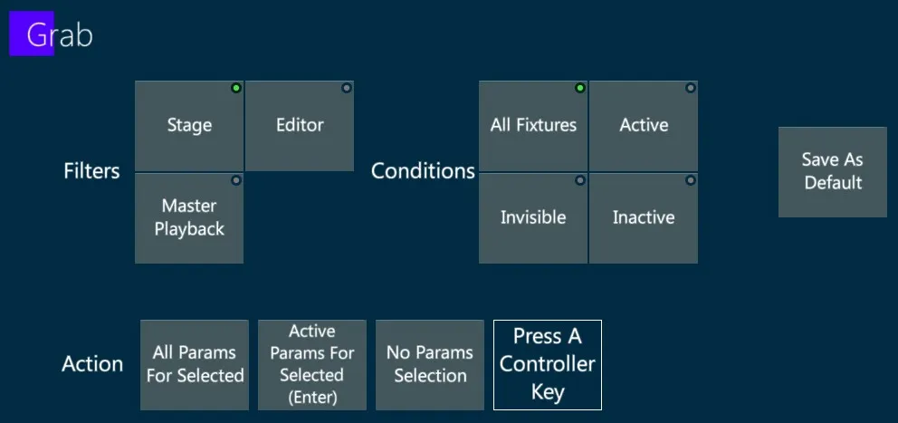
{Filters}
{Stage} - Select anything that is live on the Stage and meets the conditions below.
{Editor} - Select anything that is in the Editor and meets the conditions below.
{Master Controller} - Selects only fixtures on the Master Controller that meet the conditions below.
{Conditions}
{All Fixtures} - Selects all fixtures that have any changes via the editor.
{Active} - Fixture has intensity value over zero.
{Invisible} - Recorded “hard” parameter values for fixtures that do NOT have an intensity value over zero.
{Inactive} - Fixtures that have NO recorded values.
{Parameter Selection}
{All for Selected} Grabs all parameters for selected fixtures (shortcut is [VIBE] + [GRAB])
{Active (ENTER)} Select all “Active” fixtures and enters them into the Editor. (Shortcut is [GRAB] + [ENTER])
{Search & Replace}.
[SET] [GRAB] selects all active fixtures filtered by Set.
Pressing the Save As Default key will overwrite the Default Grab Settings.
Grab Fixtures from a Controller:
Press [GRAB] - Grab Options popup will open.
Press any Slider/Qkey/Aux Qkey controller button - All fixtures that are in the Controller’s active cue and have dimmer levels above Zero (or meet the Grab conditions selected in the popup) will be selected.
👉 Pressing ENTER will put the selection in the EDITOR.
Grab Fixtures in a cue based on a {Library} SK selection:
Press [GRAB], tap a {Library} SK - All fixtures with matching libraries will be selected.
Tap another {Library} SK - The Library will be swapped to the new library.
👉 This is especially useful for quickly swapping colors in cues containing libraries
Select all parameters for a fixture selection:
Select the fixtures
Press [VIBE] + [GRAB]
Select all Parameters with hard and tracked values outputting to the stage:
- Press [GRAB] [ENTER]
Grab an entire bank of parameters of the selected fixtures in the Editor:
- Press [FIXTURE] or [FIXTURE] [#] [+ ⟶ -] [#] [VIBE] + {BANK} (or tap on the Bank) [SHIFT] + [GRAB]
6.8 Pixel Mapper
Pixel Mapper is a new feature to get media streaming inputs, split the image into a grid of cells, get the color values from each cell and transfer them to the fixtures’ color mixing system.
The Pixel Mapper View allows creating pixel mappers, defined by a matrix of rows and columns, distributing a fixture selection through the cells, and loading a media input.
When the Pixel Mapper is activated, the fixtures in the cells will take their color mixing values directly from the video stream.
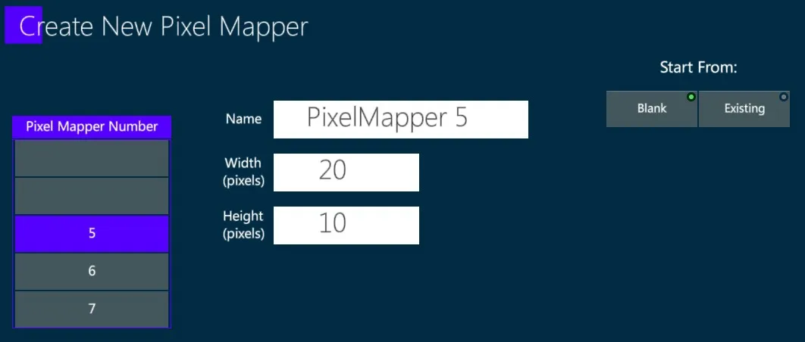
Currently the supported video streaming source is the NDI protocol, which need to be enabled in the I/O system Settings popup.
More possibilities will be added in future releases.
Creating a Pixel Mapper allows defining the amount of rows and columns of the grid, therefore the number of cells where the fixtures may be positioned.
The incoming video stream will be automatically scaled to the pixel mapper size.
One or more fixtures may be added to each cell and to any Pixel Mapper, but each mapper can have the same fixture in one cell only.
In Edit mode the fixtures may be added and moved on the cells with drag and drop, by selecting them from the menu or grabbing them from the editor.
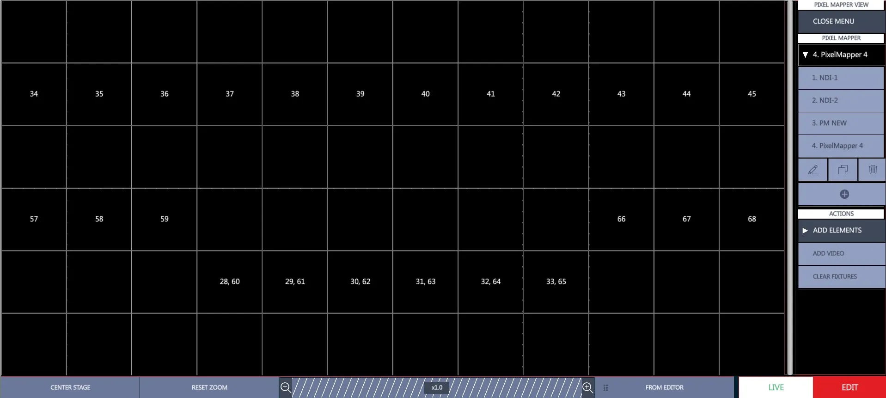
The Add Video key opens a popup showing the video inputs that may be linked to the Pixel Mapper.
The Clear Fixtures key removes all the fixtures from the Pixel Mapper.
In Live mode the incoming video is shown in the grid and the fixtures can get the color mix on their virtual HSI parameters.
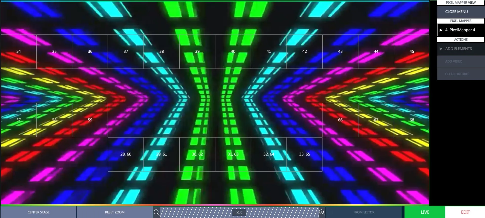
After selecting the fixtures, tap on the Pixel Mapper key on the toolbar and select the Pixel Mapper from the popup.
The fixtures’ vHSI params on the Smart Screen will start taking their values from the video source.
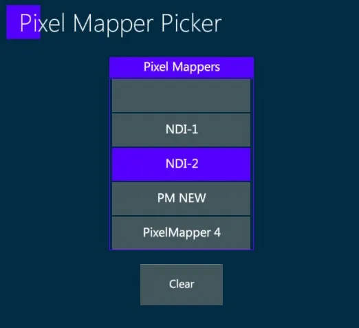
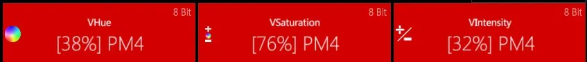
HSI values may be stored in Cues and Scenes as usual and they will get their fade times properties either between console param values and values coming from Pixel Mappers, or between values coming from different Pixel Mappers.